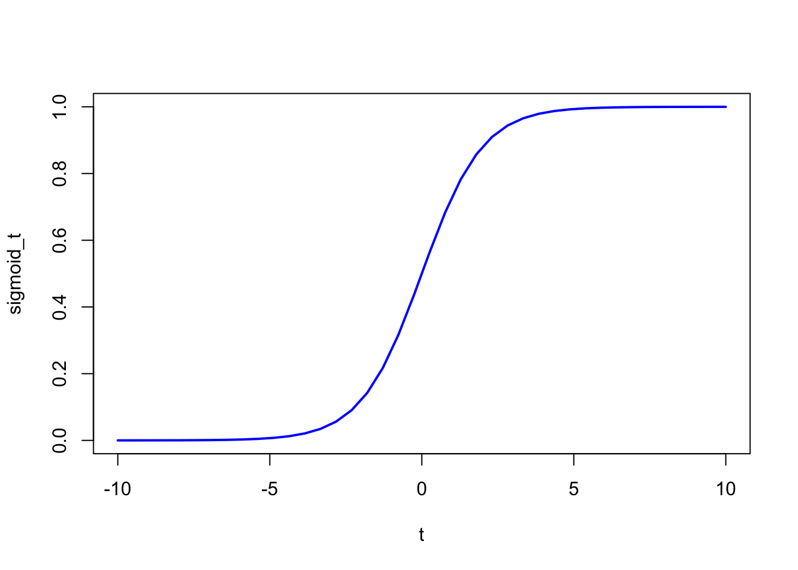

To solve a classification problem, \(y_i\) is either \(0\) or \(1\), we want to estimate the probability of \(y_i=1\) by a set of explanatory variable \(X\), denoted as \(p(x)\). However, we cannot simply model the probability by the linear regression model as \(p(x) = \beta_0 + x \beta\) since the probability is bound between [0,1] whereas the linear function of the explanatory variables is unbounded.
By transforming the probability to log odds ratio, the target variable becomes unbounded and can be expressed as iinear function of the explanatory variables: \[log\frac{p(x)}{1-p(x)} = \beta_0 + x\beta\] Now the equation looks like an OLS. However, we cannot model the log odds ratio using OLS because of Jenson’s Inequility (\(E[f(X)] \neq f(E[X])\)). In this case, we want to know \(E[p(x)]\), but by using OLS on log odds ratio, we can only get \(E[log \frac{p(x)}{1-p(x)}]\). When transforming the data to log(odds), the target variable becomes positive and negative infinity, and therefore the residuals cannot be calculated.
Instead, we want to estimate the \(p(x)\) directly. It can be done by using gradient descent or maximum likehood.
The probability can be expressed as the log(odds): $$ \[\begin{aligned} log(\frac{p}{1-p}) &= log(odds) \\ \frac{p}{1-p} &= e^{log(odds)} \\ p &= (1-p)e^{log(odds)} \\ p &= e^{log(odds)}-pe^{log(odds)} \\ p+pe^{log(odds)} &=e^{log(odds)}\\ p &= \frac{e^{log(odds)}}{1+e^{log(odds)}} \end{aligned}\]$$
To estimate the probability directly, we define the probability estimator as:
\[\hat p = h_{\theta}(x) = \sigma(\beta_0+x\beta)\]
where \(\sigma\) is the sigmoid function \(\sigma(t) = \frac{1}{1+e^{-t}}\)
t <- seq(-10,10, length=40)
sigmoid_t <- 1/(1+exp(-t))
plot(t, sigmoid_t, col="blue", lwd=2,type='l')
\(\hat y = 0 \,\, if \,\,\hat p<0.5\) and \(\hat y = 1 \,\, if \,\,\hat p\geq0.5\)
or more explicitly,
\[\hat p = \frac{1}{1+e^{-\beta_0+x\beta}}\]
singel training instance cost function: \[ c(\beta_0, \beta) = \begin{cases} -log(\hat p) & \quad \text{if } y=1\\ -log(1-\hat p) & \quad \text{if } y=0 \end{cases} \] logistic regression cost function: \[l(\beta_0, \beta) = -\frac{1}{n}\sum_{i=1}^{n}[y_ilog(\hat p)+(1-y_i)log(1-\hat p)]\] It’s similar to the log likelihood function, where we can define the likelihood function as:
\[ L(\beta_0, \beta) = \prod_{i=1}^{n}p(x_i)^{y_i}(1-p(x_i)^{1-y_i})\] then log-likelihood function is then:
\[l(\beta_0, \beta) = \sum_{i=1}^{n}y_i(log(p(x_i)))+(1-y_i)log(1-p(x_i)) \]
The estimation can either done by minimize the cost function or maximize the log-likelihood function
logistic cost function partial derivatives: \[\frac{\partial}{\partial \theta_j}l(\theta) = \frac{1}{n}\sum_{i=1}^{n}(\sigma(\theta^T x^{(i)}-y^{(i)}))x_j^{(i)}\] The logistic regression does not have analytical solution, it must be solved numerically.
We discuss one of the ways to measure the goodness of fit.
McFadden’s psuedo \(R^2\)
Recall that the \(R^2=\frac{SS(mean)-SS(fit)}{SS(mean)}\) in linear regression where \(SS\) means the sum of residual’s square \(SS(mean)\) is the sum of residual’s square where the prediction is just the average of the sample target variable. However, we can’t use the residual.
We use \(LL(fit)\) for the log-likelihood of the fitted line, and use it as a substitute for \(SS(fit)\). Now we need to substitution for \(SS(mean)\). For benchmarking purpose, we have to find substitution for \(SS(mean)\). We can use the log-likelihood of the estimation with no explanatory variable. This would be the log-likelihood with the estimate of probability \(\hat{p}\) equals to the sum of \(y\) divided by number of observations. We denote this as \(LL(0)\). Now we have the McFadden’s psuedo \[R^2 = \frac{LL(0)-LL(fit)}{LL(0)}\]
We use the null and saturated model to calculate the proposed model’s R square and p-value * Null model: an oversimplified model * Saturated model: an over-complicated model
Review R squuare for linear regression: \[R^2 = \frac{SS(Null Model)-SS(Proposed Model)}{SS(Null Model)}\] Null Model here is the average of the target variable.
Now for log-likelihood based R square:
\[R^2 = \frac{LL(Null Model)-LL(Proposed Model)}{LL(Null Model)-LL(SaturatedModel)}\]
The inclusion of saturated model ensures that the R square is between 0 and 1!
Logistic regression is a special case where we can ingnore the saturated model when calculating the R swuare as the \(LL(SaturatedModel)=0\).